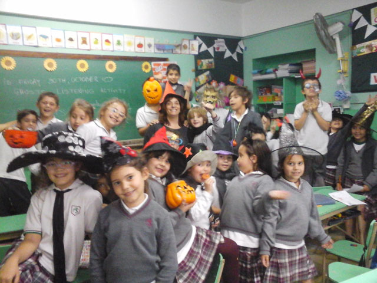

Nuestra escuela primaria
Planteamos un modelo pedagógico que apunta al desarrollo integral de los/as alumnos/as y de todos sus valores, desde un marco de convivencia donde se privilegia el diálogo y la reflexión.
El vínculo con el conocimiento se genera en el intercambio con pares y docentes; buscamos el interrogante que interpela a cada uno/a de los/as chicos/as, respetando sus procesos e inquietudes.

Propuestas:
- Acompañar el desarrollo del/a alumno/a en su singularidad.
- Incentivar los vínculos en forma solidaria y tolerante.
- Desarrollar el sentido de responsabilidad.
- Estimular la creatividad e imaginación.
- Promover el compromiso con los valores éticos que le permitan definir un proyecto.
- Generar un espacio donde desarrollarse, en un clima de sencillez, respeto y diálogo.
- Desarrollar el pensamiento lógico y computacional en los espacios institucionales de Ajedrez y de Educación Digital, Programación y Robótica
Actividades y Proyectos:
- Actividad física semanal en Campo de Deportes.
- Campamentos y viajes de estudios para optimizar la convivencia.
- Proyectos anuales interdisciplinarios.
- Olimpíadas matemáticas, Concurso literario y Desafío Ortográfico.
- Actividades de laboratorio con ciencias prácticas en conjunto.
- Enlace con Nivel Inicial y Nivel Secundario.
- Las aulas están digitalizadas y preparadas para clases multimedia y educación digital.
Inglés:
La incorporación de una lengua extranjera tiene un doble rol: es el medio por el cual se logra la comunicación con otra comunidad lingüística y es una puerta para la comprensión de otras culturas.
La enseñanza del inglés como segunda lengua comienza en el nivel inicial como adquisición natural de la gramática y el vocabulario, y continúa a lo largo de toda la escolaridad primaria, intensificándose a partir de 4º grado con materias tales como ciencias sociales, ciencias naturales y literatura que se suman a la enseñanza de la lengua con la lectura, análisis y narración de diversas obras literarias.
Trabajamos siguiendo el enfoque comunicativo y dándole importancia a las distintas inteligencias y a los distintos estilos de aprendizaje para que todos los niños descubran sus fortalezas y puedan avanzar en la adquisición de la lengua extranjera.
